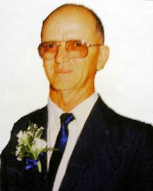

|
Indeks: |
Op 26 September 2009 het die Wes-Kaaptak van die Genealogiese Genootskap van Suid-Afrika (GGSA) 'n genealogiese uitstalling in Paarl gehou. Dit het saamgeval met die Cultivariafees wat jaarliks ook in Paarl gehou word.
Die Henning Familiebond het 'n uitnodiging gekry en het onmiddelik ingewillig om deel te neem, ten spyte van die feit dat daar nie veel Hennings in die Wes-Kaap woon en sal kan bywoon nie. Die feit dat ons in staat was om deel te neem en 'n sigbare teenwoordigheid kan handhaaf, is 'n pluimpie in ons hoed.
Die uitstalling het plaasgevind in die kerksaal van die Holy Trinity Anglikaanse kerk wat in die hoofstaat van Paarl geleë is.
Ons Familiebond was die enigste familiebond wat 'n uitstalling voorberei het. Al die ander uitstallers was navorsingsinstansies, soos die Genealogiese Genootskap self, die Genealogiese Instituut (GISA), die Kaapse Argiefbewaarplek, die Hugenote Vereniging, Universiteit Kaapstad se TANAP, Genealogiese Genootskap se Militêre Navorsingsgroep, Cape Town Family History Society.
Van vroeg af het die vyf lede van die familiebond, wat ons stalletjie beman het reeds begin om alles op te rig en vir uitstalling voor te berei. Die bemanning het bestaan uit Olivier Henning en sy vrou Charlotte van Villiersdorp, Wiena Wilkinson en haar man Aubrey van Paarl en Cornelia Henning van Kuilsrivier.
Dit was teleurstellend hoe min besoekers opgedaag het, ten spyte van die feit dat die sekretaresse van die Wes-Kaaptak van GGSA al die plaaslike koerante en radiostasies versoek het om op een of ander wyse oor die uitstalling te berig. Ongelukkig het meeste van hierdie koerante en radiostasies hierdie versoek geignoreer en was die meeste besoekers mense wat verbygery en die groot banier "Familienavorsing - Family Research" gesien het. Ten spyte hiervan moes ons net bontstaan om aan al die besoekers te verduidelik wat ons familiebond se doelstellings en doelwitte is en hoe ons te werk gaan om ons geslagsregister saam te stel en op datum te hou.
Een van beamptes wat die Kaapse Argiefbewaarplek se stalletjie beman het - Siyabonga Ntamesi, 'n swart man - het ons stalletjie besonder interessant gevind en het lank met Wiena gesels. Hy was veral beindruk met die baie mooi Henning mansjetknope en wou weet of hy ook so 'n stel sal kan dra. Wiena het baie diplomaties aan hom verduidelik dat hy wel 'n stel kan koop en dra, maar dit sal baie meer sinvol wees as hy eerder 'n stel mansjetknope met sy eie familiewapen dra. Dit het natuurlik gelei tot 'n indringende gesprek oor familiewapens. Hy het ruiterlik erken dat hy niks van die vakgebied, genealogie geweet het nie en die geselsie by ons uitstalling het hom 'n goeie insig gegee hoe mens sulke dinge hanteer. So dra ons op 'n praktiese wyse by tot die opvoeding van al ons land se mense.

Baie dankie aan almal wat finansiële bydraes oor die afgelope drie maande aangestuur het. Ons meld graag die name van diegene wat R200.00 of meer aangestuur het:
Mev Marlene Page (gebore Henning) van Pietersburg (Polokwane) - R200.00
Mnr JJ (Johannes) Henning van Monumentpark, Pretoria - R300.00
Mnr PH (Tappies) Henning van Farrarmere, Benoni, wat 'n lewenslange lid is - R2 000.00
Mnr TJ (Tjaart) Henning van Sinoville, Pretoria, wat 'n lewenslange lid is - R1000.00
Ons wil ook baie dankie sê vir diegene wat maandeliks per Debietorder bydra - veral dié lede wat van tyd tot tyd hulle debietorder aanpas. JH (Jan) Henning van Glenstantia, Pretoria is so 'n persoon. Sy debietorder staan tans op R50.00 per maand. 'n Debietorder van so min as R20.00 per maand, is vir die familiebond baie waardevol. Dit verseker 'n konstante inkomste vir die familiebond.
Ongelukkig is daar nog meer as 20 gesinne wat geen bydra vir 2009 gemaak het nie - en dit is al amper die einde van die jaar! Ons stuur ook reeds die 2010 kennisgewings saam met hierdie Nuusbrief uit.

b7.c8.d8.e1.f2.g2. Stanley Henning van Wierdapark, Centurion het vir ons laat weet dat albei sy kinders, Heinrich George *11-3-1988 en Anél *22-8-1989, wat albei studente aan die Universiteit van Pretoria is, onlangs op 'n unieke manier beloon is vir hulle harde werk tydens hulle akademiese studies. Stanley skryf:
Darem so bietjie spog ook - altwee ons kinders is genooi om by die "Golden Key International Honour Society" aan te sluit. Die organisasie is by 350 universiteite wêreldwyd geaffilieer en bied 'n netwerk, kennis uitruil en oorseese studie geleentheid aan sy lede. Slegs die top 15% van akademiese presteerders word genooi nadat hulle reeds in hulle tweede studie jaar is. Ons hoop maar dat dit die twee die geleentheid sal gee om oorsee 'n meesters of iets te doen (en dalk werk, ens. ook).

Gideon Henning, Familiebond voorsitter van die Strand het weer vir ons oor sy op-en-wakker kleinkinders geskryf. Almal presteer op vele terreine baie goed.
Nina Goosen (Wilma se dogter), die oudste van die Strand groep is 'n uitstekende pluimbal- en hokkie speler en dan doen sy ook glad nie sleg in tennis nie.
Sy het die afgelope twee jaar in pluimbal al drie die titels gewen in die Boland 0/17 en O/19 kampioenskappe. Sy het Boland verteenwoordig in O/13,O/15,O/17 en O/19. (Haar oom Stanley Henning het dieselfde reggekry toe hy op skool was) Dan het sy vir vier jaar vir haar skool se 1ste span hokkie gespeel en ook tennis vir die 1ste span. Stephan Henning (Bernard se seun), die oudste kleinseun vaar ook baie goed in pluimbal en hokkie. Hy verteenwoordig Boland in pluimbal sedert O/15 en tans O/17, dan speel hy uitstekend hokkie in die skool se 1ste span al is hy nog O/16 en akademies doen hy sy ding.
Nicolise Goosen kry nie tyd vir pluimbal nie, want sy speel vir Boland O/14 hokkie en is ook 'n goeie landloop atleet en tennis speler. As klavier musiek student is sy uitstaande met Cum Laudes en Goud Plus in die Eistedfodd. Akademies is sy baie sterk en staan gewoonlik 1ste in haar standerd. Sy het ook die toekenning as die beeldbouer van Lochnerhof Laerskool ontvang in Graad 7.
Nardo Henning is uitstaande in pluimbal en rugby. Hy het O/13 vir Boland in die A-afdeling gehelp om die eerste Boland pluimbalspan te wees wat die A-afdeling wen en was ook 1ste gekeur in die A-afdeling, ook is dit die 2de jaar dat hy vir die WP in die Craven week O/13 speel. Akademies is hy ook baie sterk, altyd onder die eerste 10 en ook onderhoofseun van Lochnerhof.
Lennert Henning is self ook 'n baie goeie pluimbal speler. Hy was die jaar as 10jarige Boland se nr1 O/13 speler waar hy in die SA toernooi baie goeie rekenskap van homself gegee het. Akademies is hy ook baie sterk - gereeld 1ste in sy standerd.
En laaste maar nie die minste nie, Christiaan Goosen, 9jr oud. Hy speel ook rugby en hokkie maar toe kom nog 'n talent te voorskyn, soos sy suster speel hy oulik klavier en in die Eistedfodd eksamens behaal hy Cum Laude en Goud Plus, akademies gaan dit ook baie goed.

b5.c1.d3.e1.f7.g3. Daniël Joachim Jacobus Henning *20-5-1931. Herman Henning van Rietfontein, Pretoria het vir ons laat weet van die afsterwe van sy broer, Danie (of Doors, soos sy vrou en haar familie hom genoem het).

My broer Danie wat net jonger as Ampie was, is op 10 Junie 2009 aan kanker oorlede. Dit was vir ons baie hartseer want Ampie (b5.cl.d3.el.f7.g2) is net 8 maande voor dit dood aan kanker.'n Paar dae nadat ons van Ampie se siekte gehoor het, het ek en Danie hom besoek.
Danie het gekla van pyn in sy sy en ek en Ampie het hom oorreed om dringend sy dokter te besoek. Dié het hom meegedeel dat hy deurtrek van die kanker is. Van die vyf Henning broers is dit nog net ek wat oor is.
Danie het sy loopbaan begin by die S.A. Spoorweë in Germiston. Tydends 1972 het hy die Plaas, Vlakfontein, in die Hendrina-distrik gekoop waar hy 'n gevestigde Beesboerdery tot stand gebring het.
Hy het homself as hardwerkend en bedrewe Beesboer in die distrik gevestig en ten tyde van sy teraarde-bestelling, het die Leraar wat die begrafnis gelei het opgemerk dat Danie elke dag van die week in sy werkspak geklee was en elke Sondag in sy Kerkpak.
Hy was vir 50 jaar met sy eggenote, Hannie, getroud.
Audrey Henning (gebore Smit). Ons lees in die sterfkennisgewings in Die Burger van die dood van Audrey Henning (gebore Smit) *8-6-1932, die vrou van b5.c4.d4.e2.f2.g5. Hendrik Andries Henning *8-10-1929. Audrey is op 6 September 2009 te Saldanha oorlede en op 11 September 2009 in die Sentraalbegraafplaas, Vredenburg begrawe.
Iris Fowels. Ds Bjarne Fowels van Hjelmeland, Noorweë, wat 'n Henning afstammeling is ('n nasaat van b7.c8.d1. Martha Johanna Elizabeth Henning *26-8-1857) het vir ons laat weet van die dood van een van sy tantes in die ouderdom van 101 jaar. Dit volg slegs 'n paar maande na die dood van een van sy ander tantes, wat ook 100 jaar oud geword het en waaroor ons in die vorige Nuusbrief verslag gedoen het.
My Aunt, Iris Fowels, born 26-08-1908 in Durban, died 13-08-2009 in Wollongong, NSW, Australia. Only some few days before she would have been 101 years old.
Iris Fowels was the daughter of Wilhelmina Catherina Zurich and James Fowels.
Wilhelmina was the daughter of Herman Zurich, and b7.c8.d1: Martha Johanna Elizabeth Henning.
Iris has one son: Ole Kristian Fowels, living in Wollongong. She had two grandchildren and three great grand children there.

Daar is sekerlik rede vir ons om fees te vier! Om 100 Nuusbriewe binne 25 jaar uit te gee is beslis 'n pluimpie in die hoed van ons familiebond. Kom ons neem 'n bietjie hierdie 25 jaar in oënskou.
Vir die eerste paar maande na die stigting van die Familiebond op 21 Julie 1984 was die nuutverkose bestuur volstoom besig met die administratiewe dingetjies om die familiebond van die grond af te kry, bv die skryf van 'n grondwet, die ontwerp van 'n Bondswapen (of familiewapen), die formulering van doelstellings en doelwitte, ledewerwing, ensovoorts.
Een van die doelwitte waarop besluit is, was dat daar gereeld - vier keer per jaar - met die lede van die familiebond gekommunikeer moet word. Die groot probleem was egter dat ons nog nie enige dupliseer fasiliteite gehad het nie. Ons het ook nie geld gehad om enige dupliseerwerk te laat doen het nie.
Met die eerste nuusbrief moes ons dus maar van kontakte gebruik maak, wat die dupliseerwerk vir ons as 'n guns, gratis gedoen het. Hierdie nuusbrief is gedurende Januarie 1985 aan alle lede gepos - ses maande na die stigting van die familiebond. Dit was maar op 'n gewone briefhoof geskryf en het slegs verslag gedoen oor die dinge waaraan die bestuur vir die eerste ses maande aandag gegee het, soos die ontwerp van die familiewapen, die druk van die geslagsregister, 'n toekomstige familie museum, geldsake, bydraes vir die nuusbrief en ledewerwing.
Uitnodigings om by die familiebond aan te sluit is aan meer as 300 families gestuur en 31 gesinne het reeds teen die einde van 1984 by die familiebond aangesluit.
Vir die eerste paar jaar het die duplisering van die Nuusbrief maar 'n nagmerrie gebly en moes ons van die gunste en gawes van andere gebruik maak. Dikwels het ons Bondsekretaris met sy hande in die hare gesit omdat hy nie 'n borg kon kry nie. Dan moes hy maar op sy knieë gaan staan en baie beloftes maak om die nuusbriewe gedupliseer te kry. 'n Ander probleem (wat vandag nog geld) was natuurlik dat ons baie min (soms geen) nuus van ons lede af ontvang nie. Dit plaas geweldige druk op ons Bondsekretaris om self nuuswaardige beriggies te vind en te skryf.
In daardie dae kon fotostaatmasjiene nog nie foto's mooi kopieer nie. Lou Henning, spotprenttekenaar by Rapport, het gelukkig aangebied om vir ons sketse van mense en gebeure te maak, wat ons Nuusbriewe heelwat opgevrolik het. Na ongeveer drie jaar het ons in die gelukkige posisie gekom om 'n tweedehandse fotostaatmasjien direk by Minolta te kon koop.
Dit het groot verligting gebring, dog hierdie masjien was nog steeds nie in staat om foto's te kopieer nie. Met verloop van tyd kon ons gelukkig beter masjiene aanskaf, sodat ons vandag redelik selfonderhoudend is. Mense wat met rekenaars werk sal egter weet dat jy vandag 'n verskeidenheid drukkers spotgoedkoop kan koop, maar dat jy tot jou ore toe betaal vir die ink - of inkpoeier kasette. Dit sal altyd 'n ideaal bly om ons Nuusbriewe litografies te laat druk. Ongelukkig is ons oplaag tans nog te klein en maak dit die eenheidskoste per nuusbrief te hoog.
Vir 18 jaar lank het die Nuusbrief onder die formele naam "Henning" verskyn. Gedurende Maart 2002 besluit die bestuur van die familiebond om die nuusbrief so 'n bietjie op te vrolik. Daar word besluit om die naam te verander na "Ons Haantjie". Gedurende die 13 de eeu praat mense wat in die omgewing van die Baltiese see gewoon het nog die ou Baltiese dialek. In hierdie dialek was die woord Hen = 'n hoenderhaan. Die seun van Johannes, die oue, het die bynaam "jong hoederhaan" gekry, d.w.s henning en wat noem ons so 'n voël in moderne Afrikaans - 'n Haantjie.
Wat doen 'n haantjie! Hy kraai en vertel luidrugtig vir almal wat wil luister wat op die werf aangaan. Ons hoop dat Ons Haantjie nog vir baie jare vir ons vars en interessante nuus vanaf die Henning werf sal bring.

Wanneer mens deur ou geskiedkundige boeke blaai en enigiets oor 'n Henning duik op, trek dit maar altyd aandag. Ek lees nou onlangs iets in Karel Schoeman se boek "Armosyn van die Kaap - Die wêreld van `n slavin" raak. Dit gaan oor alleenlopende vroue en die naam van Cornelia Henning word onder andere daarin genoem. Dit moet die derde dogter van Christoffel Henning wees, wat voor 1683 by die Kaap aangekom het. Die stuk wat hier aangehaal word handel oor baie arm en sukkelende alleenlopende vroue, met of sonder kinders. Dit is duidelik dat daar in die vroeë jare aan die Kaap ook heelwat armoede onder baie van die inwoners was.
"Wat die alleenstaande vroue in De la Fontaine se lys betref, oorsigtelikheidshalwe saamgegroepeer volgens die grootte van hul onderskeie gesinne, is dit interessant om te sien op watter maniere hulle 'n bestaan gemaak of probeer maak het. Lijsbeth van den Berg, met sewe kinders, 'heeft veel werk om aan de kost te komen', en Margaretha Cons, met ewe veel, 'kan leven van een winkeltje en een plaats, dog is niet sonder schulden'; Anna van Ek, met vyf kinders, 'heeft wijnig, leeft stil en doet een winkeltje'; en Margaretha Roux, eweneens met vyf, 'heeft een schoenlappers winkeltje en heeft schulden'. Leonora Veij, wat vier kinders gehad het, 'doet een winkeltje, waarvan [zij] met haar kinderen leeft', en Geertruijd Nauta, met drie, 'doet de backers neering, doch heeft veel schulden'.
Agatha Admiraal, met twee kinders, 'kan stilletjes levende bestaan'; en wat betref ander alleenstaande vroue met ewe groot gesinne: Rachel Bastroo 'logeert menschen om van te leven, dog is niet sonder schulde'; Eedje van Bergstee, 'woont stilletjes aan de Caab en doet een winkeltje'; Elizabeth Smit 'heeft een tuintje waarvan [zij] leeft, niet sonder schulden'; en Maria van der Westhuijsen 'is een landbouwster die bestaan kan, dog niet sonder schulden'. Van ander word daar egter nie gesê hoe hulle hulself en die kinders onderhou nie: Magdalena Bastiaansz 'is armer als arm'; Cornelia Henning 'is een slegt [armoedige] vrouw mensch, en arm'; Catharina Smit 'kan naauwelijks leven'; en Anna Willemsz 'leeft van haar self en is arm'. Susanna Coningshoven met een kind is 'een arme vrouw die soo wat logeert', en Sara Strand, ook met een, 'is arm, dog weet niet wat om voor de kost te doen', terwyl Mensje de Vries, eweneens met een kind, sonder meer beskryf word as "een slegt [armoedige] vrouwmensch en arm'."